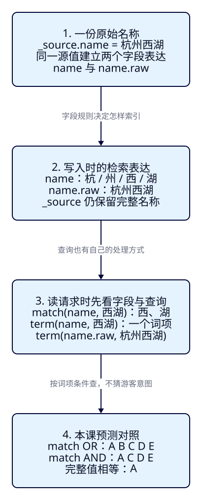
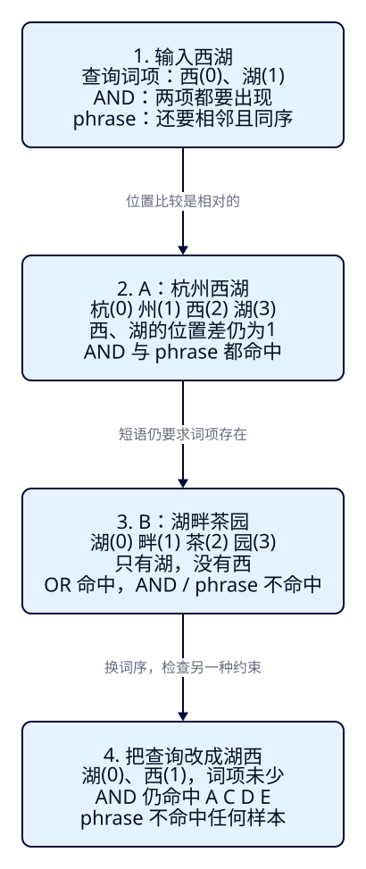

“西湖”是在找名称，
还是精确编码？
F04 已经约定了名称、城市与价格的字段规则。现在游客输入“西湖”，却可能看到“湖畔茶园”；换一种查询又一条都没有。ES 不会自动判断游客是在输入关键词、完整名称还是城市编码。本课让同一份资料接受几种不同的问题，先预测命中，再用词项和位置解释结果。
本课目标
- 用 name 的实际分析结果核对 token 与 position，解释 term、match 默认 OR 和 AND 的命中差别。
- 为城市编码和完整名称选择字段与查询，解释 HZ/hz、name/name.raw 的正反例。
- 通过正序、逆序和长短短语，区分词项齐全、相对位置与完整值相等；能点名清理并重做。
本课进入景点搜索阶段，仍用 REST 观察结果。本机展示壳和 Java 在 F07 提供，Pages 只承载教程；城市、预算与状态的组合筛选到 F06，中文分析链与评分到 F13/F18 展开。
本次重试中 ES 9.4.0 因云容器缺少 /proc/self/coredump_filter，在 HTTP 启动前退出。以下 token、ID 与计数均为固定版本源码和样本推导的预测，不是实测响应。正文、图解和 HTTP 阅读另行检查；不能借用 F03 的响应认定本课通过。启动证据与两轮验收入口。
展开本课目录
1. “找西湖”必须先说清查哪个字段
沿用 F02–F04 的 A–E。这里的名称、金额与状态都是固定教学资料，不代表实时票价或营业情况；本课没有改名，也没有加一套更容易匹配的样本。F02 的人工词项是概念模型，本课则按 F04 明确指定的 standard 分析器推导，二者不能直接混用。
| 样本 / 固定 ID | 名称 / 城市 | 价格（分）/ 状态 |
|---|---|---|
| A · a-hz-xihu | 杭州西湖 / HZ | 0 / open |
| B · a-hz-tea | 湖畔茶园 / HZ | 8000 / open |
| C · a-fz-xihu | 福州西湖 / FZ | 0 / open |
| D · a-hz-night | 西湖夜游 / HZ | 26000 / open |
| E · a-hz-old | 西湖旧展馆 / HZ | 6000 / offline |
游客在名称框输入“西湖”，我们先问：名称里出现某些检索词就可以，还是两个词都必须有，或必须按顺序相邻？选择城市 HZ 则是另一个问题：城市编码必须完整相等。前者通常从分析文本的查询入手，后者通常用精确词项查询；字段如何索引、查询如何处理输入共同决定命中，不是输入两个汉字就一定按完整字符串查。
这次所有名称查询都只指定 name。B 的描述虽然提到“西湖”，本课不会自动搜它的 description；B 是否命中，要看名称“湖畔茶园”里的词项。多字段搜索到 F08 再做。
2. f05-c01：在独立索引准备相同资料
创建 tut-f05-attractions，使用专用端口19200、ES9.4.0、1主/0副本、无认证、持久卷；不复用源码篇9200/9201。完整 mapping和五份资料与 F04 正确版本一致，本课可以独立导入，不要求 F04 已执行成功。name 为 text + standard，name.raw、city_code 为 keyword；没有另外设置 search_analyzer 或 normalizer。
cd projects/travel-search
docker compose -f infra/single-node/compose.yaml up -d
bash infra/single-node/wait.sh
export ES_URL=http://127.0.0.1:19200
bash labs/f05/01-prepare.sh准备脚本做了什么？展开六条完整请求
curl --fail-with-body -sS "$ES_URL/?pretty"
curl --fail-with-body -sS -X PUT "$ES_URL/tut-f05-attractions?pretty" \
-H 'Content-Type: application/json' --data-binary @search/f05/index.json
curl --fail-with-body -sS "$ES_URL/_cluster/health/tut-f05-attractions?wait_for_status=green&timeout=30s&pretty"
curl --fail-with-body -sS "$ES_URL/tut-f05-attractions/_mapping?pretty"
curl --fail-with-body -sS -X POST "$ES_URL/tut-f05-attractions/_bulk?pretty" \
-H 'Content-Type: application/x-ndjson' --data-binary @data/f05/attractions.ndjson
curl --fail-with-body -sS -X POST "$ES_URL/tut-f05-attractions/_refresh?pretty"先确认 version.number=9.4.0、cluster_name=travel-search-lab。创建已确认、限定索引 green 且 timed_out=false 后，读 mapping 核对类型。Bulk 必须 errors=false、五项 created；最后 refresh 的 failed=0。HTTP200 不能代替条级检查。索引已存在时先判断要保留什么，确认可删后按末尾点名清理，不要忽略创建失败继续跑旧数据。
接着运行 bash labs/f05/02-keywords.sh：它先查全部文档，再执行三次分析与三种关键词查询。下面按这个顺序解释，想逐条观察也可以复制对应 curl。完整脚本与请求表见本课实验说明。
3. 名称原文和可检索词项是两回事
分析器把文本转换为检索用的词项（token）。name 写入时经过 standard；本课没有覆盖搜索分析器，match 与 match_phrase 的输入也沿用该字段的分析规则。_source.name 仍是完整原文，看它不能知道索引里有哪些词项。先用 _analyze 观察这条规则会怎样处理输入，不展开完整分析链。
{
"field": "name",
"text": "西湖"
}curl --fail-with-body -sS -X POST "$ES_URL/tut-f05-attractions/_analyze?pretty" \
-H 'Content-Type: application/json' --data-binary @search/f05/analyze-query.json
curl --fail-with-body -sS -X POST "$ES_URL/tut-f05-attractions/_analyze?pretty" \
-H 'Content-Type: application/json' --data-binary @search/f05/analyze-name.json
curl --fail-with-body -sS -X POST "$ES_URL/tut-f05-attractions/_analyze?pretty" \
-H 'Content-Type: application/json' --data-binary @search/f05/analyze-tea.json| 传入的文本 | 预测 token(position) | 先看什么 |
|---|---|---|
| 西湖 | 西(0)、湖(1) | 没有一个完整的“西湖”词项 |
| 杭州西湖 | 杭(0)、州(1)、西(2)、湖(3) | 西、湖相邻，起点不是0 |
| 湖畔茶园 | 湖(0)、畔(1)、茶(2)、园(3) | 有“湖”，没有“西” |
这里的单字词项来自这个版本 standard 对当前汉字样本的处理，不能推广成“所有中文分析器都按单字切”。position 是词项的位置序号，不是字节偏移；短语会用它比较相对位置。分析响应的 token/position 可直接核对上表；start_offset/end_offset 是原文范围，本课不靠它们判断词序。
_analyze 的 field 参数选择分析规则，传入的 text 才是待分析内容。它没有从 A 文档读取已存词项，也没有执行搜索。因此还必须比较后续真实命中，不能只看到两个 token 就宣称搜索实验通过。

4. term 查一个词项，match 先分析再组合
term 对本课字符串字段直接查给定的索引词项，不先执行 name 的全文分析。把“西湖”原样交给 term(name)，就要求存在一个完整的“西湖”词项；当前单字索引里没有它，预计零命中。这是合法查询得到空集，不是请求语法错误，也不表示资料没导入。
{
"size": 10,
"track_total_hits": true,
"_source": [
"attraction_id",
"name",
"city_code",
"ticket_price_fen",
"currency",
"status"
],
"query": {
"term": {
"name": "西湖"
}
},
"sort": [
{
"attraction_id": "asc"
}
]
}match 用字段的搜索分析器处理输入，再组合词项条件。“西湖”得到西、湖；默认 operator=or，在当前简单词项链里满足任意一个就进入候选。B 只有“湖”也能命中，预计 A–E 全部返回。这里没有通配符或自动补全，也没有把查询理解成景点实体。
{
"size": 10,
"track_total_hits": true,
"_source": [
"attraction_id",
"name",
"city_code",
"ticket_price_fen",
"currency",
"status"
],
"query": {
"match": {
"name": "西湖"
}
},
"sort": [
{
"attraction_id": "asc"
}
]
}游客希望名称同时包含这两个词项时，可显式写 operator="and"。本课它要求西和湖都存在，B 被排除，剩下 A/C/D/E。AND 管词项是否齐全，不管先后，也不要求它们相邻；它更不会验证名称是不是游客心里的那个景点。
{
"size": 10,
"track_total_hits": true,
"_source": [
"attraction_id",
"name",
"city_code",
"ticket_price_fen",
"currency",
"status"
],
"query": {
"match": {
"name": {
"query": "西湖",
"operator": "and"
}
}
},
"sort": [
{
"attraction_id": "asc"
}
]
}curl --fail-with-body -sS -X POST "$ES_URL/tut-f05-attractions/_search?pretty" \
-H 'Content-Type: application/json' --data-binary @search/f05/term-name.json
curl --fail-with-body -sS -X POST "$ES_URL/tut-f05-attractions/_search?pretty" \
-H 'Content-Type: application/json' --data-binary @search/f05/match-or.json
curl --fail-with-body -sS -X POST "$ES_URL/tut-f05-attractions/_search?pretty" \
-H 'Content-Type: application/json' --data-binary @search/f05/match-and.json5. 先判断命中集合，再讨论排序好不好
每个搜索文件都有完整请求体，发送到 POST /tut-f05-attractions/_search；DSL 是请求体里描述查询条件的 JSON。使用 POST 的这个搜索端点不会修改景点。最外层 query 指定条件，size=10 是这一页最多返回多少条，track_total_hits=true 请求准确总数，_source 选择展示字段。
为了每次好对照，所有请求显式按 keyword 的 attraction_id 升序，不是按相关性排序，不要从这次返回先后判断谁更相关；价格/距离排序在 F10。先跑的 all.json 用 match_all，应看到全部五条。随后读取每次响应的 timed_out=false、_shards.failed=0、hits.total 的 value 与 relation=eq，再把 hits.hits 中每个 _id 对照下表。
| 条件 | 预测集合 / 总数 | 为什么 |
|---|---|---|
| match_all | A B C D E / 5 | 确认搜索视图中的全部样本 |
| term(name, 西湖) | 空 / 0 | 没有完整的“西湖”词项 |
| match(name, 西湖)，默认 OR | A B C D E / 5 | 名称至少有一个词项 |
| match(name, 西湖)，AND | A C D E / 4 | 名称两个词项都有 |
表里的字母表示集合，不表示返回次序。ACDE 的实际 ID 升序应是 a-fz-xihu、a-hz-night、a-hz-old、a-hz-xihu；ABCDE 则在 old 与 xihu 之间多出 a-hz-tea。不要只比较 total=4：删掉一条正确样本、混进一条错误样本也可能仍是4。核对 name、city_code 和 status，才能解释 C 是福州、E 已下架却仍然命中。
这些结果还没有城市、状态或预算条件。名称命中不自动意味着“杭州、200元以内、可游玩”；关键词只完成了搜索需求的一部分。
6. f05-c02：城市编码与完整名称怎样查
现在换问题：“城市编码必须是 HZ”。city_code 是 keyword，且没有 normalizer；本课索引里的完整值就是 HZ 或 FZ。term(city_code, HZ) 预计命中 A/B/D/E；改成小写 hz，预计零命中。它不会替应用把“杭州”转换为 HZ，也不会自动纠正编码大小写。
{
"size": 10,
"track_total_hits": true,
"_source": [
"attraction_id",
"name",
"city_code",
"ticket_price_fen",
"currency",
"status"
],
"query": {
"term": {
"city_code": "HZ"
}
},
"sort": [
{
"attraction_id": "asc"
}
]
}若要名称完整等于“杭州西湖”，查询 name.raw 上的完整值；原始 JSON 仍只存 name，raw 是 F04 建立的多字段。term(name.raw, 西湖) 不会命中四个“包含西湖”的长名称；term(name.raw, 杭州西湖) 则只命中 A。
{
"size": 10,
"track_total_hits": true,
"_source": [
"attraction_id",
"name",
"city_code",
"ticket_price_fen",
"currency",
"status"
],
"query": {
"term": {
"name.raw": "杭州西湖"
}
},
"sort": [
{
"attraction_id": "asc"
}
]
}curl --fail-with-body -sS -X POST "$ES_URL/tut-f05-attractions/_search?pretty" \
-H 'Content-Type: application/json' --data-binary @search/f05/term-city.json
curl --fail-with-body -sS -X POST "$ES_URL/tut-f05-attractions/_search?pretty" \
-H 'Content-Type: application/json' --data-binary @search/f05/term-city-lower.json
curl --fail-with-body -sS -X POST "$ES_URL/tut-f05-attractions/_search?pretty" \
-H 'Content-Type: application/json' --data-binary @search/f05/term-name-raw.json
curl --fail-with-body -sS -X POST "$ES_URL/tut-f05-attractions/_search?pretty" \
-H 'Content-Type: application/json' --data-binary @search/f05/term-name-full.json
curl --fail-with-body -sS -X POST "$ES_URL/tut-f05-attractions/_search?pretty" \
-H 'Content-Type: application/json' --data-binary @search/f05/term-name-token.json| 查询意图 / 文件 | 预测结果 | 反例解释 |
|---|---|---|
| 城市 HZ / term-city | A B D E | 只是城市相等，E 仍可命中 |
| 城市 hz / term-city-lower | 空 | 无 normalizer，不自动改大小写 |
| 完整名称 西湖 / term-name-raw | 空 | 五份名称都不完整等于西湖 |
| 完整名称 杭州西湖 / term-name-full | A | 比较 name.raw 的完整值 |
| 词项 西 / term-name-token | A C D E | name 中确实索引了单字西 |
最后一行说明：term 不是“禁止用于 text”。它可以查到 text 中已有的词项，只是普通全文输入往往不等于那些词项，因此不适合作为名称搜索的默认方案。反过来，match 也能用于 keyword，通常按该字段的完整值规则处理；不是看到 match 就一定拆成多个词。要结合字段规则看语义。
7. f05-c03：两项都有，还要按顺序相邻
把 AND 查询改成“湖西”，词项仍是湖、西，本课 AND 预计仍命中 A/C/D/E。这能证明 AND 不约束词序。若游客想找连续的“西湖”表达，使用 match_phrase：它同样先分析输入，再检查词项的相对位置。本课显式写 slop=0（也是默认值），在当前无同义词、无位置空洞的单字链中，要求西后面紧接湖。
{
"size": 10,
"track_total_hits": true,
"_source": [
"attraction_id",
"name",
"city_code",
"ticket_price_fen",
"currency",
"status"
],
"query": {
"match_phrase": {
"name": {
"query": "西湖",
"slop": 0
}
}
},
"sort": [
{
"attraction_id": "asc"
}
]
}A 中西在位置2、湖在3，查询中西在0、湖在1，起点可以不同，位置差与顺序相符即可。C/D/E 也有这个相邻序列，因此预计命中四条；B 没有西，不会因为用了短语就自动补出它。改为“湖西”的短语，当前五份名称都没有相应顺序，预计零命中。

curl --fail-with-body -sS -X POST "$ES_URL/tut-f05-attractions/_search?pretty" \
-H 'Content-Type: application/json' --data-binary @search/f05/match-and-reversed.json
curl --fail-with-body -sS -X POST "$ES_URL/tut-f05-attractions/_search?pretty" \
-H 'Content-Type: application/json' --data-binary @search/f05/phrase.json
curl --fail-with-body -sS -X POST "$ES_URL/tut-f05-attractions/_search?pretty" \
-H 'Content-Type: application/json' --data-binary @search/f05/phrase-reversed.json
curl --fail-with-body -sS -X POST "$ES_URL/tut-f05-attractions/_search?pretty" \
-H 'Content-Type: application/json' --data-binary @search/f05/phrase-full.json| 名称查询 | 预测集合 | 新增了什么约束 |
|---|---|---|
| match AND：湖西 | A C D E | 与西湖 AND 相同，只要词项齐全 |
| match_phrase：西湖，slop=0 | A C D E | 西后紧接湖 |
| match_phrase：湖西，slop=0 | 空 | 当前语料没有这个顺序 |
| match_phrase：杭州西湖，slop=0 | A | 杭、州、西、湖按相对位置匹配 |
当前“西湖”的 AND 与短语恰好同为四条，不代表语义相同；逆序对照才显出差别。“杭州西湖”的长短语这次只命中 A，也不意味着它等价于完整名称相等：若另有“杭州西湖公园”，它仍可含这个短语，而 term(name.raw, 杭州西湖) 不会匹配这个更长的完整值。
短语检查的是分析后的序列，不保证原始字符串逐字相等。标点、空白以及将来的分析器变化都可能改变词项或位置，不能把 match_phrase 当成任意文本的字面子串判断。更大的 slop 容许位置移动，本课保持0，不用放宽距离来代替中文词义处理。
8. 先选问题，再选字段与查询
| 你要表达什么 | 本课入口 | 还不能保证什么 |
|---|---|---|
| 名称里命中分析后的词 | match(name)，明确 OR/AND | 中文实体理解、词序、城市和营业状态 |
| 名称里有相应词项序列 | match_phrase(name)，本课 slop=0 | 完整名称相等、任意原文字面子串 |
| 城市编码完整相等 | term(city_code) | 城市别名、大小写或外部编码自动转换 |
| 名称完整相等 | term(name.raw) | 包含匹配、别名或模糊容错 |
| 查当前全部资料作基线 | match_all | 任何游客筛选需求 |
把 OR 换成 AND 可能减少这次的误匹配，也可能在别的输入里漏掉本来希望找到的结果；短语也不能解决“紫禁城/故宫”这样的表达差异。先固定语料，记录哪些应找到、哪些不该找到，再选查询。中文方案与质量评估分别在 F13–F17、F22 系统学习。
9. 点名清理、重做与能力检查
按顺序运行的完整入口如下。准备脚本不能反复无条件建同名索引；其后三组只读查询可以重复，但旧数据或 mapping 改动会改变本课预测。
bash labs/f05/01-prepare.sh
bash labs/f05/02-keywords.sh
bash labs/f05/03-exact.sh
bash labs/f05/04-phrase.sh确认本课资料可删后，删除哪个索引？怎样重做？
下面仅删除 tut-f05-attractions。F03/F04 索引、持久卷和其他业务资源不删除，专用节点也不自动停止。
# 只删除 F05 景点索引；不会触碰 F03/F04 或读者业务索引。
curl --fail-with-body -sS -X DELETE "$ES_URL/tut-f05-attractions?ignore_unavailable=true&pretty"执行 bash labs/f05/cleanup.sh 后，重新按01→02→03→04运行，逐条核对相同的 token、ID 和总数。若要结束独立实验，可手工执行 docker compose -f infra/single-node/compose.yaml stop；它会停止同一个课程专用节点，卷仍保留。
能力检查：不看上表，解释为什么 OR 找到 B、AND 排除 B，为什么 name 的 term(西湖) 为空而 term(西) 有结果，再说明“湖西”的 AND 与短语为何不同。最后独立写出 HZ 精确条件和完整名称条件，核对 ID 集合。只看到 HTTP200 或 total 正确还不够。作者两轮验收脚本会读取同一批原始脚本和文件；它是配套证据，读者不必学习测试工具。
练习：先选语义，再看答案
1. B 的描述提到西湖，是否因此被这次的 name 查询找到？
不是。查询只指定 name，不自动遍历 description。B 在默认 OR 下命中，是因为名称“湖畔茶园”里有湖；AND 要求西和湖都有，所以排除 B。
2. term(name, 西湖) 零命中，term(name, 西) 却有四条，是矛盾吗？
不是。当前 name 的索引词项按单字建立，没有完整的西湖，但有西。term 直接查词项。不能把“term 不适合作为 text 全文搜索默认方案”理解成“term 不能用于 text”。
3. AND 输入杭州西湖，当前应有谁？它能替代城市条件吗？
按本课 standard，要求杭、州、西、湖都有，当前仅 A；C 缺少杭。它仍只是名称条件，若其他城市有带这四个字的名称也可能命中。要限定城市应独立使用 city_code 的完整编码条件，组合方法到 F06。
4. A 的西、湖在位置2和3，查询在0和1，为什么短语仍能命中？
比较相对位置与顺序，文档里的起点可以平移。当前两项都相邻且同序，slop=0 可以匹配；不是要求文档也从位置0开始。
5. 新增“杭州西湖公园”后，短语杭州西湖与完整名称条件会相同吗？
不会。相同分析规则下，新名称仍含杭、州、西、湖这个相邻序列，短语可匹配；name.raw 的完整值为杭州西湖公园，不等于杭州西湖。它是推演题，当前固定五份资料里没有这条新文档。
6. AND 西湖得到四条，是否已经找到杭州、200元内、可游玩的景点？
没有。C 是福州，D 为26000分（260元），E 为offline。AND 只约束名称词项。F06 用独立城市、金额和状态条件组合；本课不能把关键词命中当成全部业务要求合格。
本课陷阱
速记与下一课
| 入口 | 在本课语料里怎样判断 |
|---|---|
| _analyze(field=name) | 观察规则产生的 token/position；不是搜索或读取已存词项 |
| term | 不执行全文分析，查字段中的给定词项；本课 keyword 为完整值 |
| match OR / AND | 先分析，再决定词项任一或全部满足；不加词序要求 |
| match_phrase，slop=0 | 按本课简单词项链检查相邻同序，不要求从名称开头开始 |
| 验收证据 | mapping / token / 全部 ID / total / 字段 / 无超时与分片失败；清理后重做 |
先说清字段和想表达的条件，再解释输入怎样变成查询。
现在能解释谁因名称命中，却还没有筛掉福州、超预算或下架资料。F06 将把城市、价格、状态与距离组合起来，让“相关”与“必须满足”各自承担清楚的职责。
版本依据与本课预测的适用条件
ES9.4.0、Lucene10.4.0，普通 text/keyword，标准分析器，未覆盖搜索分析器、无 normalizer/同义词/插件。固定源码已核对，API 未实测；完整链接和文件哈希见内容审阅记录。